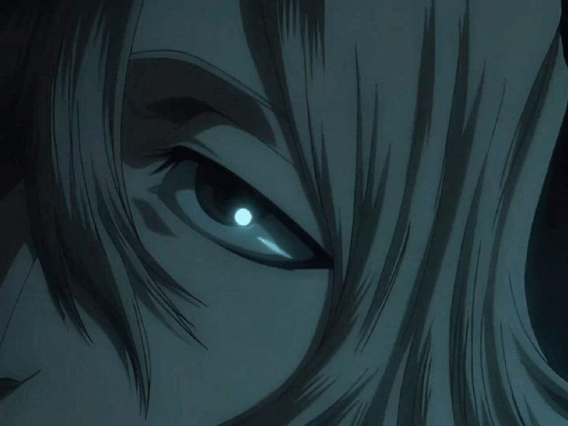
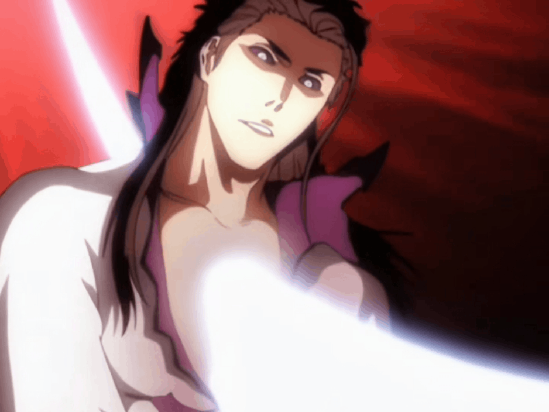

Fica instituído o Conselho Master, órgão responsável pela administração, orientação e preservação da organização.
I — Composição
O Conselho será formado por duas cadeiras permanentes e demais cadeiras ordinárias.
As cadeiras permanentes representam a autoridade superior e a continuidade institucional.
Os demais conselheiros serão admitidos mediante aprovação.
II — Diretrizes
Preservar a unidade e os interesses coletivos.
Coordenar os diferentes núcleos e suas lideranças.
Estabelecer orientações e normas gerais.
Mediar conflitos e deliberar sobre questões relevantes.
Promover organização, responsabilidade e cooperação.
III — Deliberações e Autoridade
As decisões deverão buscar consenso; na ausência dele, haverá votação.
Cada conselheiro terá direito a um voto.
As duas cadeiras permanentes possuem poder individual de veto.
As cadeiras permanentes poderão emitir determinações extraordinárias.
Alterações estruturais permanentes exigirão concordância das duas cadeiras permanentes.
As decisões oficiais deverão ser registradas.
IV — Responsabilidade e Convivência
Todo integrante deverá respeitar os demais membros, independentemente de cargo ou posição.
Empréstimos de dinheiro entre integrantes deverão ter condições e prazos de devolução acordados previamente.
Quem assumir uma dívida deverá cumprir o compromisso estabelecido.
O descumprimento de acordos financeiros deverá ser tratado com responsabilidade e diálogo.
É proibido utilizar o nome da Master para solicitar dinheiro, contrair dívidas ou assumir compromissos sem autorização.
Ninguém será obrigado a emprestar dinheiro ou assumir responsabilidades financeiras por outro integrante.
Fraudes, golpes, ameaças e má-fé serão considerados violações graves de conduta.
V — Conduta
Respeito mútuo e responsabilidade institucional são obrigatórios.
Divergências deverão ser tratadas de maneira apropriada.
É vedado o abuso de autoridade e a utilização do Conselho para interesses particulares.
Todo integrante terá direito de manifestação e defesa.
Infrações poderão resultar em advertência, afastamento ou desligamento, conforme sua gravidade.
VI — Competências
Compete ao Conselho estabelecer diretrizes, avaliar admissões, acompanhar lideranças, resolver conflitos, fiscalizar normas e orientar os rumos da organização.
VII — Disposição Final
O Conselho deverá atuar como instituição de estabilidade, organização e continuidade. Suas deliberações serão coletivas, respeitando a autoridade superior e o poder de veto das duas cadeiras permanentes.
Composição do Conselho
Cadeiras Permanentes

Imp
Autoridade Superior / Cadeira Vitalícia
Vupex
Autoridade Superior / Cadeira VitalíciaConselheiros patrício's
Painky 𓂀
1X0 PRO CRIMEBurguês⚜
i love you bb
Nome do Conselheiro 3
Conselheiro Ordinário
Nome do Conselheiro 4
Conselheiro Ordinário
Nome do Conselheiro 5
Conselheiro Ordinário
Nome do Conselheiro 6
Conselheiro Ordinário
Nome do Conselheiro 7
Conselheiro Ordinário
Nome do Conselheiro 8
Conselheiro OrdinárioCONSELHO MASTER
Unidade, autoridade, responsabilidade e continuidade.